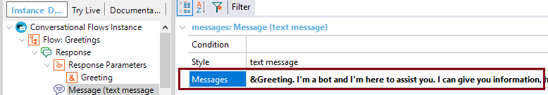

Specifies the response messages for this flow. You can type multiple messages using the ‘;’ delimiter, and reference any context parameter using the '&' character. Scope Objects: Conversational Flows Instance Description
Through the Messages property of a Message node - under the Response of a Flow of a Conversational instance, you can specify a text response to the end user, after the Flow finishes its execution. If you specify more than one text message at the Messages property, the provider sends any of them in a ramdom way. However, if the response is a redirection (i.e: Action property is set to "Redirect To", the first message is the one to be sent to the user always). In order to specify context parameters into the Messages, see HowTo: Reference context parameters in a conversation. Samples
In the next example, the Greetings Conversational Flows object has a Message node under the Response, which Messages property includes a text message greeting the end user. The &Greeting variable is returned by the Conversational Object of the Flow.  AvailabilityThis property is available since GeneXus 15 upgrade 12. See Also
|
| Backlinks |
| Chatbot Response |
| Trigger Messages property |